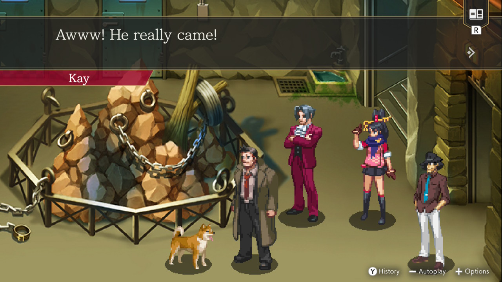
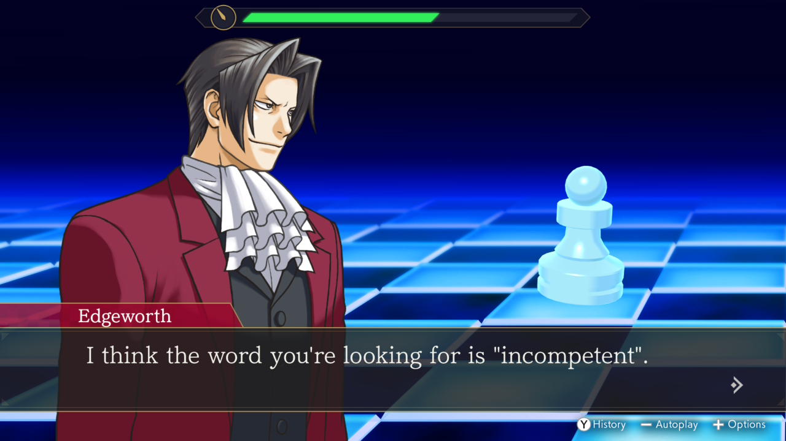
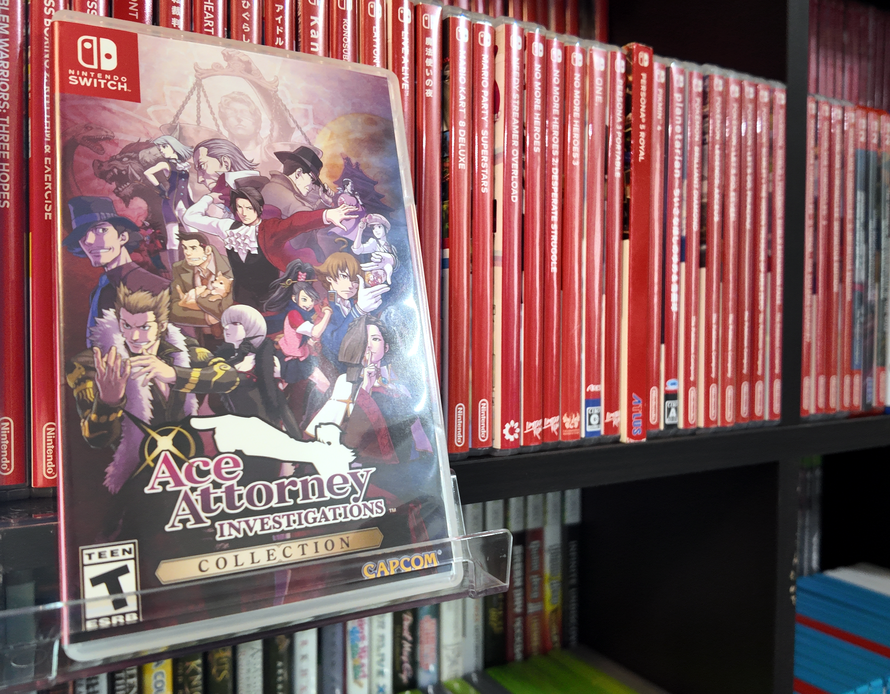

1game1week - Week 12 (4/3/26) - Miles Edgeworth: Ace Attorney Investigations 2 -Prosecutor's Gambit-
Hey all! It's Week 12! Well, it was, back on the 26th! Okay, this is the last of the "let's play catch-up" posts. I'll also be uploading Week 13 tomorrow so I can be completely caught up on posts. As for real life lore. That week, from the 19th to the 26th, I was mostly still travelling. I returned home the 23rd, actually. Travelling is stressful, man. I mean, it can be a great distraction from your own struggles at home, but at home you have a good amount of familiar elements. For this particular trip, I got my first rental car. Well, technically my second, but that's just because my name was on it. In any case, first rental car that I drove. Back home, I drive a decade-old car, so a lot of its features are fairly basic, but operate well for what I expect a car to do. I think the most modern part of it is just a backup camera. Given the advancement of technology and mobile devices, a lot of... interesting features have been added to cars. Lane assist, distance tracking, integrated displays, blind-spot monitoring, satellite parking assistance... But geez, man. I think these tools make the process of driving a car... "too easy", if that makes sense. It feels counterintuitively dangerous. Say you're driving an old car, for the sake of the argument. You're bored, because you're driving, but you're still paying attention on the road because if you don't, you will crash and die. The car cannot drive itself. So fast forward a decade, and it turns out... the car's pretty close to being able to drive itself. There's quite a few that do drive themselves, actually, stemming from the rise in features like the ones mentioned above. As technology evolves, it has been able to ease the user experience to the point where the user doesn't even need to think of it. Given this, and this is merely an assumption on my part, isn't it reasonable to think that the user, knowing the car is capable of driving itself, just... go on their little pocket-sized entertainment tablet that, nowadays, they have been conditioned to think of as a source of entertainment since childhood (ie. iPad kids)? In the state I live in, Texas, motor crashes went up by approximately 20% between 2014 and 2023. (Source) It's no real secret that people are more distracted while driving everyday, given that we're all on our little devices checking our little social media platforms, waiting to see a new episode of Fruit Love Island. So I wonder how many motor accidents everyday would be able to be blamed on users' overreliance on modern car features? All of this makes me think of computers. Back when I was growing up, they weren't necessarily intuitive machines to use. All of this would necessitate a learning curve, and tweaking various settings to the users' comfort. Nowadays, all of that has been reduced to incredibly user-friendly interfaces that do not require much learning. While, surface level, this is an objective good for productivity and technology growth, it creates a system where the user is not able to learn. With my generation, the "younger" folk were to teach the older ones how to use emerging technology. Nowadays, it's backwards, due to the aforementioned. Technology- and entertainment has become so brainless, due to a low skill requirement. Think of it- would you expect a 10-year-old who grew up watching TikToks (musical.ly back then, I suppose) to be able to navigate even a bare bones simple operating system like Windows XP? Or go through basic stuff like driver setup? Conversely, give someone who never learned to parallel park a car without satellite parking assist. Do we think they could handle it? This is all just "wow, this guy is old"-speak, but I think that technology becoming simple to use- from computers, to cars, has been a detriment to society. From taking away their attention, to handing them crutches. If you were to ask me: heated seats, CarPlay, blind spot detection, tire sensor indicators, and cameras should be the only "modern tech" in cars. Everything else will eventually become a detriment to the user. Even worse with driverless cars! Though, if I were to request a feature... it'd be nice if we had automatic / predictive turn signals so that people actually used them! I wrote a lot more than I expected to. I just really hated my rental car. Anyways!New games from 3/19 -> 3/25: - Xenogears (PS1) - Thank you to my friend Cal for selling me this!
As of 3/26, my yearly backlog was at -14 (lower is better, -+0 since last week). And onto 1g1w. A game is considered "beaten" if I've accomplished the main objective of the game, regardless of how many routes / endings I've achieved. However, it's preferable to get all endings if possible! GAME(S): Miles Edgeworth: Ace Attorney Investigations 2 -Prosecutor's Gambit- PLATFORM: Switch GENRE: Adventure Visual Novel STARTED ON: 2/22 BEATEN ON: 3/8 TOTAL PLAYTIME: 23h30m (tracked via Nintendo Store App) After all that tirade about how much I hate modern cars, I'll now write a probably smaller tirade about how much I loved Investigations 2. I think it's actually a little bit criminal that this game was Japan-only for a long time. Of course, there have been translation patches for it, but those came out four years after the game's initial release. It wasn't until 2024 that the game saw its first official English release in the Ace Attorney Investigations collection, which actually finished rounding up all of the Ace Attorney series into modern platforms, something that was great to see (minus the Professor Layton crossover which is still 100+ CIB) The collection had a little bit of an interesting release, with the Americas only getting a physical release on Switch and Europe and Asia getting a physical only for PS4. A little bit strange, but I suppose that's just the "larger market" for physical copies in those territories? I'm not really an expert there, but it definitely seems like a pretty strange situation. Either way. It's kind of funny how much of a long-lived franchise the Ace Attorney series has been, with the originals being GameBoy Advance games.

All the fun background aside, the game takes place a week or so after the original, and centers around Edgeworth's waning faith in his profession and reconciling with the past while deciding his future. Alongside Edgeworth appears Kay Faraday, returning from the first game and Dick Gumshoe, my personal favorite cup ramen aficionado. While with Ace Attorney games, a few cases can feel disconnected from an overall narrative or simply halfway there to being filler, every single case in this game follows an overarching thread and shares the same themes of overcoming the past and looking towards the future (at least, once the narrative starts in earnest). Thematically, it's almost like they're killing the pas-*shot* ...Jokes aside, it almost really does feel like this entire game's narrative could have a strong case for being thematically really close to Kill the Past. Essentially, the narrative as a whole all hinges on what Edgeworth wishes to do with his life while keeping the audience captive on whether he'll continue as a prosecutor or follow in his father's footsteps. This is encouraged by Eddie Fender (lol), who was Gregory Edgeworth's employee and who still runs Edgeworth & Co. Law Offices. Gameplaywise, it's a little more involved that normal Ace Attorney, as it features... well, the investigation part in a 2.5D setting. It's actually a lot more engaging this way than normal, though that's not really surprising. During investigations, there are various sections where you debate with other members of the game's cast. It's just Cross Examinations from the original games and work very much the same way. There's another "debate" method in this game called Mind Chess. Essentially, you're tasked with slowly chipping away at the character's willingness to keep their secrets. Essentially baiting them into spilling the beans by following a specific pattern in conversation. I wasn't the biggest Mind Chess enjoyer, but it had its charm. Especially because Edgeworth just sounds like a total dork.
Some of the new characters are incredibly refreshing. I think it's probably obvious I was a fan of Verity Gavelle pretty much instantly, but I have no idea how Eustace Winner grew on me so much. Total loveable loser. I hope these aren't one-off characters, but they haven't been seen since this game, so I doubt it. Additionally, the overarching narrative of both Investigations games is kind of tied up nicely with this game, so it's doubtful we'll see another Investigations title. In any case... we haven't really seen a main series entry since Spirit of Justice, unless the TGAA games count. Franchise has been asleep for a while, with nothing new since Investigations Collection. I'll just wait for the next game with bated breath!
Thanks for reading! If you need to contact me for any reason, please feel free to email me at aru@hoshikawa-aru.com.